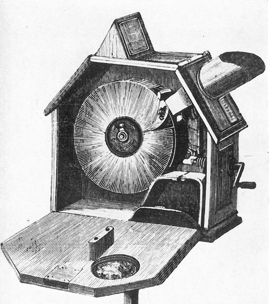

What is a Mutoscope?
The Mutoscope was an early motion picture device, invented by W.K.L. Dickson and Herman Casler. Like Thomas Edison’s Kinetoscope, it did not project on a screen and provided viewing to only one person at a time. Cheaper and simpler than the Kinetoscope, the system, quickly dominated the coin-in-the-slot peep-show business.
The Mutoscope is a hand-cranked viewer for exhibiting a reel of photographs printed from a motion picture film, commercialised in 1896